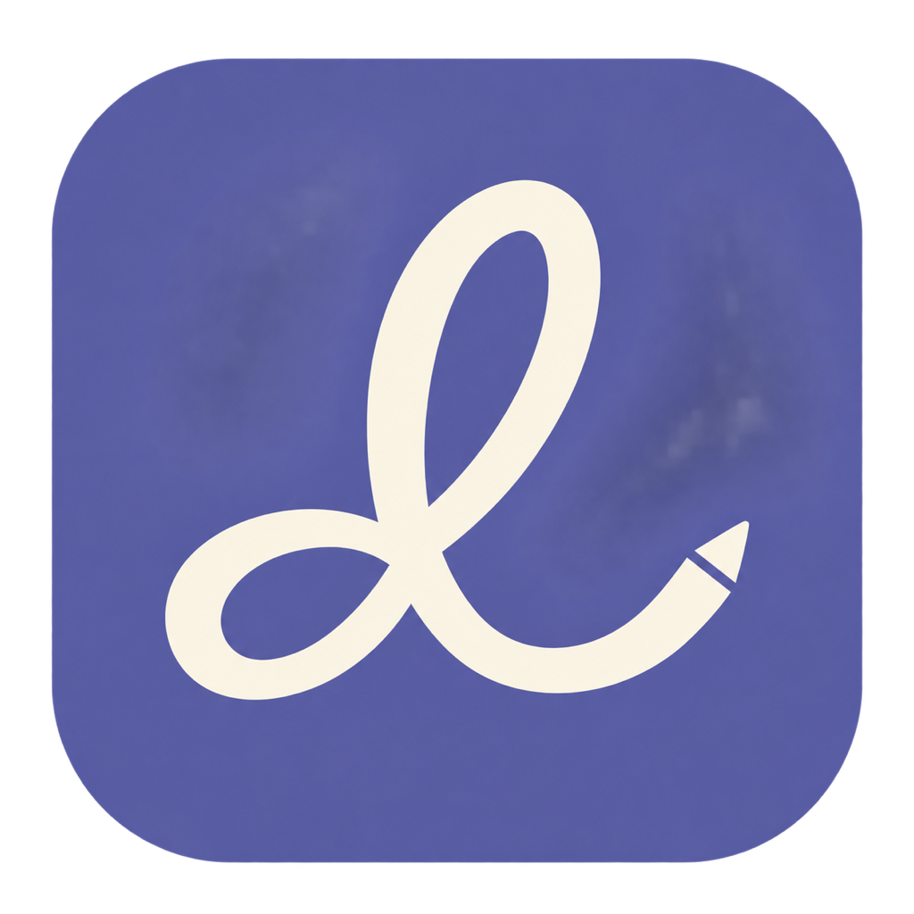

From thought to done.
Capture tasks and notes, choose your next step, and make space for focused work.

Lazo EverydayA LITTLE MORE CLARITY. EVERY DAY.
Your tasks, notes and focused work, together in a calm desktop workspace. Less organising. More getting things done.
Explore EverydayIn development for macOS. Public downloads are not available yet.
Three priorities. A little breathing room.
Reserve a quiet block for the work that matters.
Capture tasks and notes, choose your next step, and make space for focused work.
Choose where Everyday stores your data on your computer. Reopen the same folder after reinstalling.
Create a password-encrypted backup and restore it into a new folder. Keep your recovery password safe and back up external vaults separately.
Everyday is a local desktop product. This page introduces it; your personal workspace stays on your computer.
Discover the Lazo story ↗